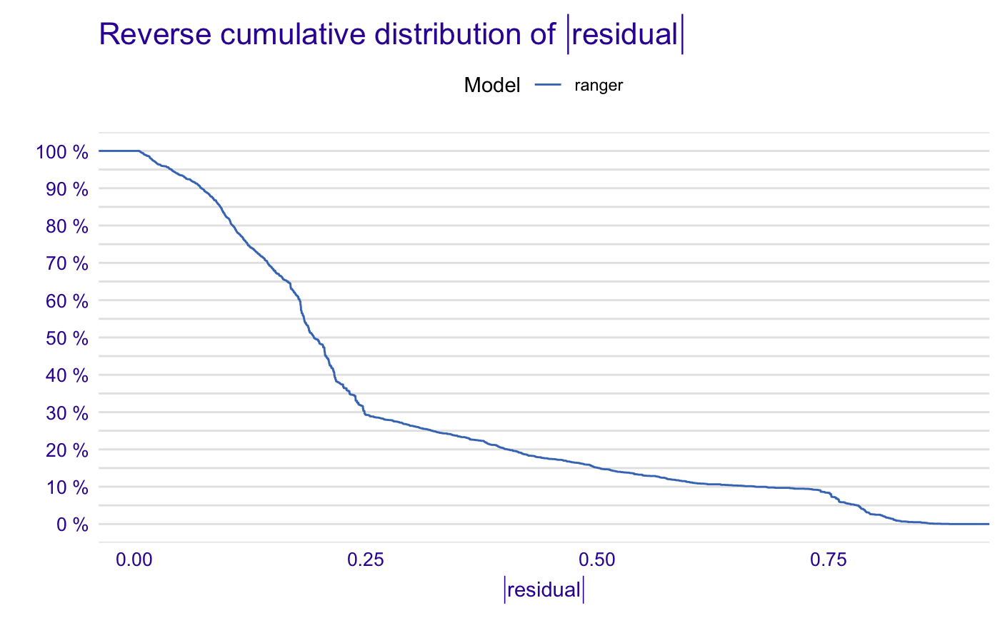

R/print_model_performance.R
print.model_performance.RdPrint Dataset Level Model Performance Summary
# S3 method for model_performance
print(x, ...)a model to be explained, object of the class 'model_performance_explainer'
other parameters
# \donttest{
library("ranger")
titanic_ranger_model <- ranger(survived~., data = titanic_imputed, num.trees = 100,
probability = TRUE)
# It's a good practice to pass data without target variable
explainer_ranger <- explain(titanic_ranger_model, data = titanic_imputed[,-8],
y = titanic_imputed$survived)
#> Preparation of a new explainer is initiated
#> -> model label : ranger ( default )
#> -> data : 2207 rows 7 cols
#> -> target variable : 2207 values
#> -> predict function : yhat.ranger will be used ( default )
#> -> predicted values : No value for predict function target column. ( default )
#> -> model_info : package ranger , ver. 0.13.1 , task classification ( default )
#> -> predicted values : numerical, min = 0.0161764 , mean = 0.3208959 , max = 0.9937051
#> -> residual function : difference between y and yhat ( default )
#> -> residuals : numerical, min = -0.7772053 , mean = 0.001260923 , max = 0.8976737
#> A new explainer has been created!
# resulting dataframe has predicted values and residuals
mp_ex_rn <- model_performance(explainer_ranger)
mp_ex_rn
#> Measures for: classification
#> recall : 0.580872
#> precision : 0.9017467
#> f1 : 0.7065868
#> accuracy : 0.8445854
#> auc : 0.8987864
#>
#> Residuals:
#> 0% 10% 20% 30% 40% 50%
#> -0.77720527 -0.24343492 -0.20388361 -0.19016672 -0.16936737 -0.12856812
#> 60% 70% 80% 90% 100%
#> -0.09560342 0.03182266 0.23808423 0.60460960 0.89767370
plot(mp_ex_rn)

# }